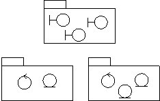
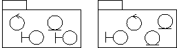
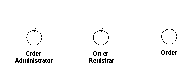
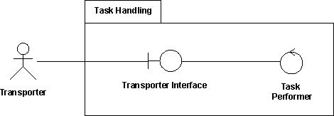
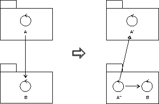
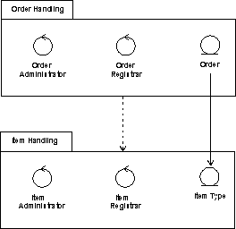
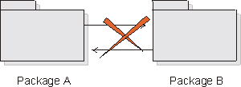
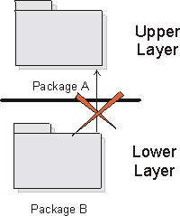

|
The Design Model
can be structured into smaller units to make it easier to understand. By grouping Design Model elements into packages
and subsystems, then showing how those groupings relate to one another, it is easier to understand the overall
structure of the model. Note that a design subsystem is modeled as a component that realizes one or more interfaces; for more information, see Artifact: Design Subsystem and Guideline: Design Subsystem. Design packages, on the other hand, are just for grouping.
A class contained in a package can be public or private. A public class can be associated by any other class. A private class can be associated only
by classes contained in the package.
A package interface consists of a package's public classes. The package interface (public classes) isolates and
implements the dependencies on other packages. In this way, parallel development is simplified because you can
establish interfaces early on, and the developers need to know only about changes in the interfaces of other packages.
You can partition the Design Model for a number of reasons:
-
You can use packages and subsystems as order, configuration, or delivery units when a system is finished.
-
Allocation of resources and the competence of different development teams may require that the project be divided
among different groups at different sites. Subsystems, with well-defined interfaces, provide a way to divide work
between teams in a controlled, coordinated way, allowing design and implementation to proceed in parallel.
-
Subsystems can be used to structure the design model in a way that reflects the user types. Many change
requirements originate from users; subsystems ensure that changes from a particular user type will affect only the
parts of the system that correspond to that user type.
-
In some applications, certain information should be accessible to only a few people. Subsystems let you preserve
secrecy in areas where it is needed.
-
If you are building a support system, you can, using subsystems and packages to give it a structure similar to the
structure of the system to be supported. In this way, you can synchronize the maintenance of the two systems.
-
Subsystems are used to represent the existing products
and services that the system uses (for example, COTS products, and libraries), as explained in the next several
sections.
When the boundary classes are distributed to packages there are two different strategies that can be applied; which one
to choose depends on whether or not the system interfaces are likely to change greatly in the future.
-
If it is likely that the system interface will be replaced, or undergo considerable changes, the interface should
be separated from the rest of the design model. When the user interface is changed, only these packages are
affected. An example of such a major change is the switch from a line-oriented interface to a window-oriented
interface.

If the primary aim is to simplify major interface changes, the boundary classes should be placed in one (or several)
separate packages.
-
If no major interface changes are planned, changes to the system services should be the guiding principle, rather
than changes to the interface. The boundary classes should then be placed together with the entity and control
classes with which they are functionally related. This way, it will be easy to see what boundary classes are
affected if a certain entity or control class is changed.

To simplify changes to the services of the system, the boundary classes are packaged with the classes to which they are
functionally related.
Mandatory boundary classes that are not functionally related to any entity- or control classes, should be placed in
separate packages, together with boundary classes that belong to the same interface.
If a boundary class is related to an optional service, group it with the classes that collaborate to provide the
service, in a separate subsystem. The subsystem will map onto an optional component which will be provided when the
optional functionality is ordered.
A package should be identified for each group of classes that are functionally related. There are several practical
criteria that can be applied when judging if two classes are functionally related. These are, in order of diminishing
importance:
-
If changes in one class' behavior and/or structure necessitate changes in another class, the two classes are
functionally related.
Example
If a new attribute is added to the entity class Order, this will most likely necessitate updating the
control class Order Administrator. Therefore, they belong to the same package, Order Handling.
-
It is possible to find out if one class is functionally related to another by beginning with a class - for example,
an entity class - and examining the impact of it being removed from the system. Any classes that become superfluous
as a result of a class removal are somehow connected to the removed class. By superfluous, we mean that the class
is only used by the removed class, or is itself dependent upon the removed class.
Example
There is a package Order Handling containing the two control classes Order Administrator and Order
Registrar, in the Depot Handling System. Both of these control classes model services regarding order
handling in the depot. All order attributes and relationships are stored by the entity class Order, which
only exists for order handling. If the entity class is removed, there will be no need for the Order
Administrator or the Order Registrar, because they are only useful if the Order is there.
Therefore, the entity class Order should be included in the same package as the two control classes.

Order Administrator and Order Registrar belong to the same package as Order, because they
become superfluous if Order is removed from the system.
-
Two objects can be functionally related if they interact with a large number of messages, or have an otherwise
complicated intercommunication.
Example
The control class Task Performer sends and receives many messages to and from the Transporter
Interface. This is another indication that they should be included in the same package, Task Handling.
-
A boundary class can be functionally related to a particular entity class if the function of the boundary class is
to present the entity class.
Example
The boundary class, Pallet Form, in the Depot Handling System, presents an instance of the entity
class Pallet to the user. Each Pallet is represented by an identification number on the screen. If
the information about a Pallet is changed, for example, if the Pallet is also given a name, the
boundary class might have to be changed as well. Pallet Form should therefore be included in the same
package as Pallet.
-
Two classes can be functionally related if they interact with, or are affected by changes in, the same actor. If
two classes do not involve the same actor, they should not lie in the same package. The last rule can, of course,
be ignored for more important reasons.
Example
There is a package Task Handling in the Depot Handling System, which includes, among other things,
the control class Task Performer. This is the only package involved with the actor Transporter, the
physical transporter that can transport a pallet in the depot. The actor interacts with the control class Task
Performer via the boundary class Transporter Interface. This boundary class should therefore be included
in the package Task Handling.

Transporter Interface and Task Performer belong to the same package since both of them are affected
by changes in the Transporter actor.
-
Two classes can be functionally related if they have relationships between each other (associations, aggregations,
and so on). Of course, this criterion cannot be followed mindlessly, but can be used when no other criterion is
applicable.
-
A class can be functionally related to the class that creates instances of it.
These two criteria determine when two classes should not be placed in the same package:
-
Two classes that are related to different actors should not be placed in the same package.
-
An optional and a mandatory class should not be placed in the same package.
First, all elements in a package must have the same optionality: there can be no optional model elements in a mandatory
package.
Example
The mandatory entity class Article Type has, among other things, an attribute called Restock Threshold.
The restock function, however, is optional in the system. Therefore, Article should be split up into two entity
classes, where the optional class relates the mandatory one.
A package that is considered mandatory might not depend on any package that is considered optional.
As a rule, a single package can not be used by two different actors. The reason for this is that a change in one
actor's behavior should not affect other actors as well. There are exceptions to this rule, such as for packages that
constitute optional services. Packages of this type should not be divided, no matter how many actors use it. Therefore,
split any package, or class, that is used by several actors unless the package is optional.
All classes in the same package must be functionally related. If you have followed the criteria in the section "Find
packages from Functionally Related Classes," the classes in one package will be functionally related among themselves.
However, a particular class might in itself contain "too much" behavior, or relationships that do not belong to the
class. Part of the class should then be removed to become a completely new class, or to some other class, which
probably will belong to another package.
Example
The behavior of a control class, A, in one package should not depend too much on a class, B, in another
package. To isolate the B-specific behavior, the control class A must be split into two control classes,
A' and A". The B-specific behavior is placed in the new control class, A", which is placed
in the same package as B. The new class A" also gets a relationship, such as generalization, to the
original object A'.

To isolate the B-specific behavior, the control class A, which lacks homogeneity, is split into two
control classes, A' and A''.
If a class in one package has an association to a class in a different package, then these packages depend on each
other. Package dependencies are modeled using a dependency relationship between the packages. Dependency relationships
help us to assess the consequence of changes: a package upon which many packages depend is more difficult to change
than one upon which no packages depend.
Because several dependencies like this will be discovered during the specification of the packages, these relationships
are bound to change during the work. The description of a dependency relationship might include information about what
class relationships have caused the dependency. Since this introduces information that is difficult to maintain, it
should be done only if the information is pertinent and of value.
Example
In the Depot Handling System there is a dependency relationship from the package Order Handling to the
package Item Handling. This association arises because the entity class Order in Order Handling
has an association to the entity class Item Type in the other package.

The package Order Handling is dependent on Item Handling, because there is an association between two
classes in the packages.
Package coupling is good and bad: good, because coupling represent re-use, and bad, because coupling represents
dependencies that make the system harder to change and evolve. Some general principles can be followed:
-
Packages should not be cross-coupled (i.e. co-dependent); e.g. two packages should not be dependent on one another.

In these cases, the packages need to be reorganized to remove the cross-dependencies.
-
Packages in lower layers should not be dependent upon packages in upper layers. Packages should only be dependent
upon packages in the same layer and in the next lower layer.

In these cases, the functionality needs to be repartitioned. One solution is to state the dependencies in terms of
interfaces, and organize the interfaces in the lower layer.
-
In general, dependencies should not skip layers, unless the dependent behavior is common across all layers, and the
alternative is to simply pass-through operation invocations across layers.
-
Packages should not depend on subsystems, only on other packages or on interfaces.
|